-
私たちについて
多能工と呼ばれるプロの職人集団が、外構工事（家の外回りの工事）を中心に事業を展開する会社です。
多能工とは、様々な建設作業が出来る職人の事を意味します。
当社の職人は、重機作業、鉄筋作業、型枠作業、左官作業、電気工事、金物取付作業、土木作業植栽作業、設備作業の全てを1人で行ないます。
体力仕事も少なからず存在しますが、ベトナム人研修生や最新の道具が手助けしますので、昔よりも作業内容は簡略化されています。
当社では今後も最新設備を取り入れ、作業負担の軽減化を進めていく予定です。
また、最新道具が発展した現在でも多能工職人になることは難しいのですが、 当社は関西の中でもとくに職人の在籍率が高い会社でもあります。
今では解体工事、リフォーム工事、新築工事なども施工する会社となり、より深く様々な作業を身に付ける事ができる未来発展型の会社です。 -
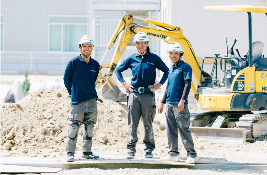 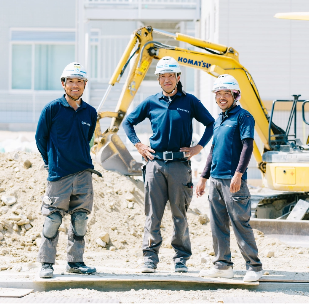 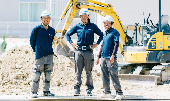
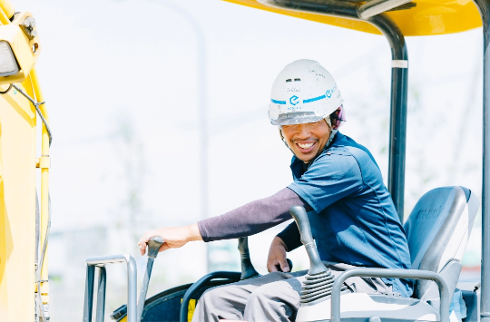 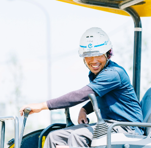 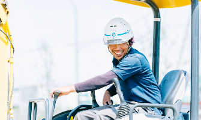
私たちの仕事
エクステリアのプロ集団と言っても、
仕事内容はさまざまです。
仕事をしていく上で、「あなたの興味のあること」「向いていること」が見つけられるかもしれません。
-
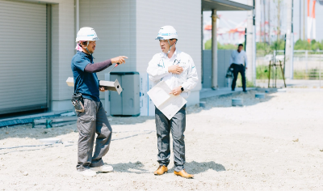 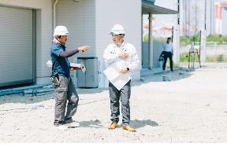 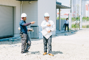
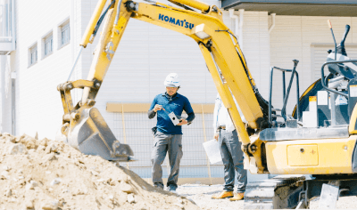 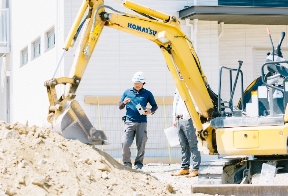 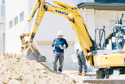
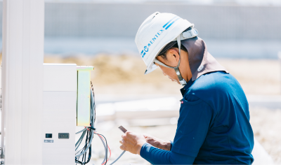

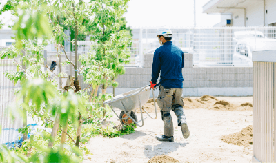 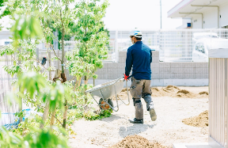 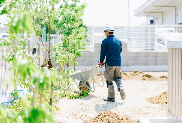
-
仕事内容の紹介
屋外での現場作業をメインに行ないます。
- 1
- 重機の運転、土木作業の手元
- 2
- ブロック積み、フェンス、カーポート、門扉、照明、ポスト、表札と言われる金物商品の取付工事
- 3
- 左官作業と言われるコンクリートを扱う工事作業
- 4
- 電気工事（照明、インターホンの取付）
- 5
- 設備工事（給水管、排水管の設置）
- 6
- 植栽工事（新築への植栽の植え付け作業）
- 7
- 鉄筋の組立て作業
- 8
- 型枠の設置工事
Photos & Movie
私たちの仕事内容の一部を
動画と写真でお伝えします。
-
-
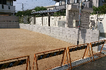
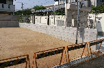
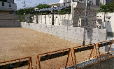
PICK UP
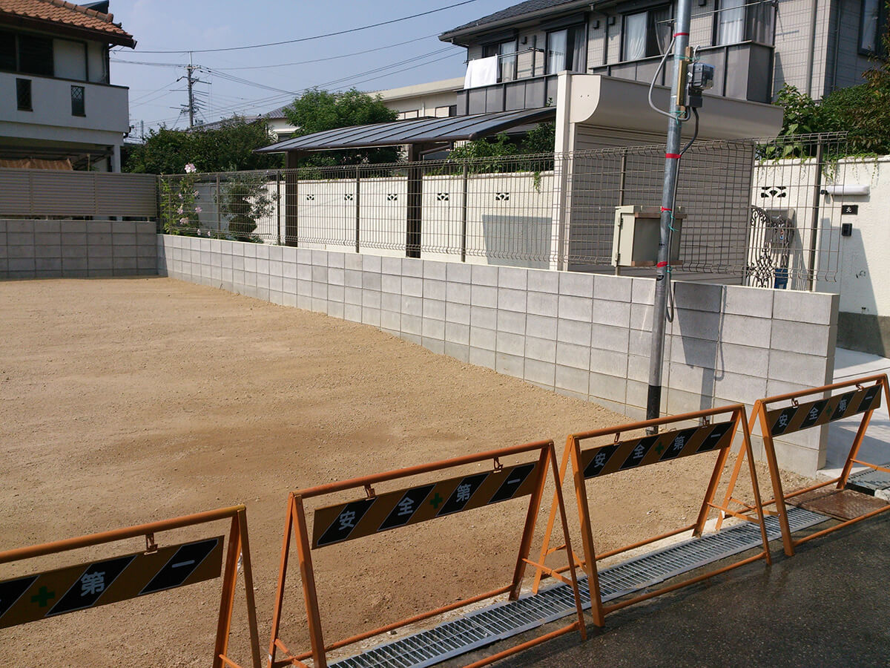 -
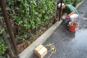
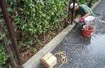
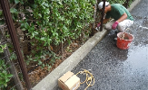
PICK UP
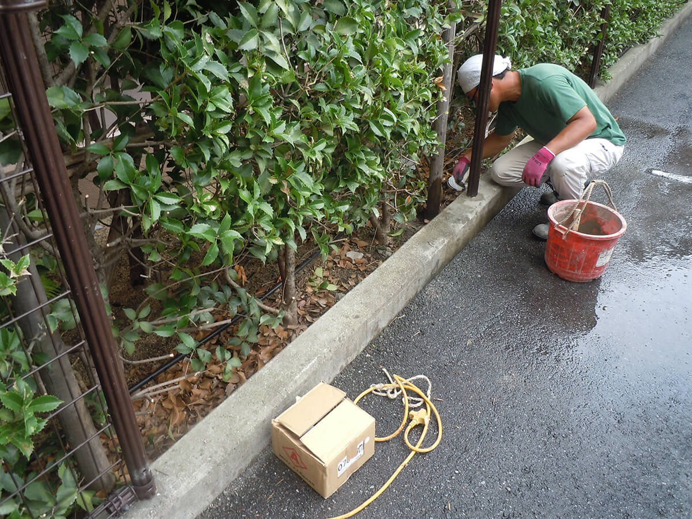 -
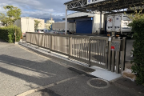
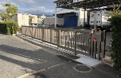
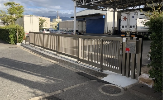
PICK UP
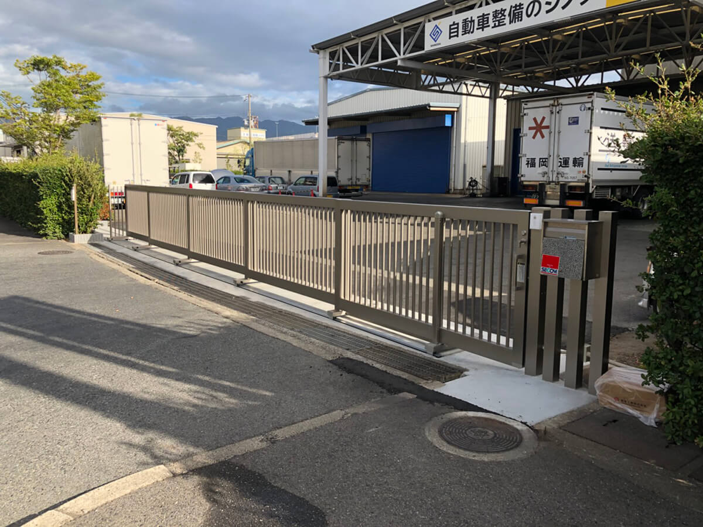 -
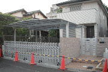
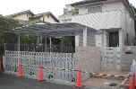
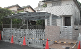
PICK UP
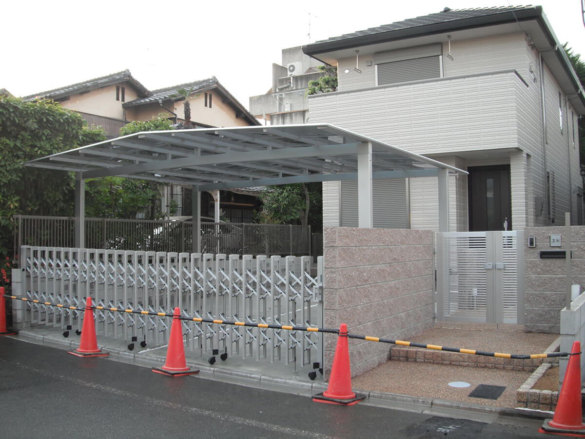 -
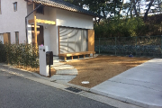
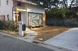
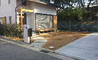
PICK UP
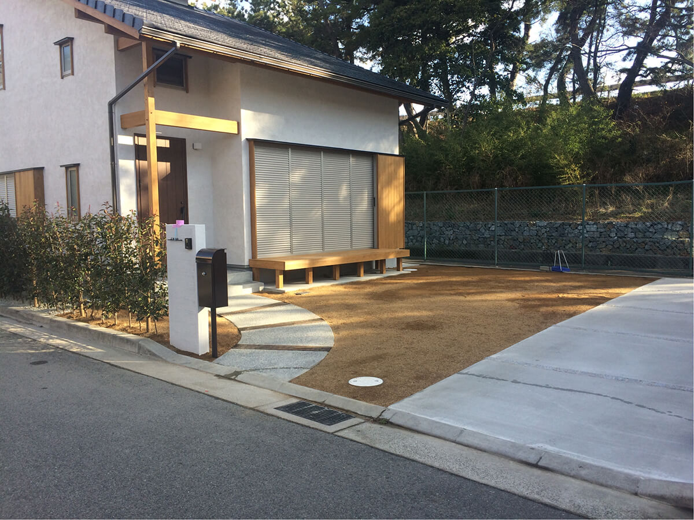 -
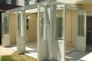
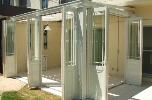
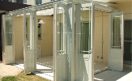
PICK UP
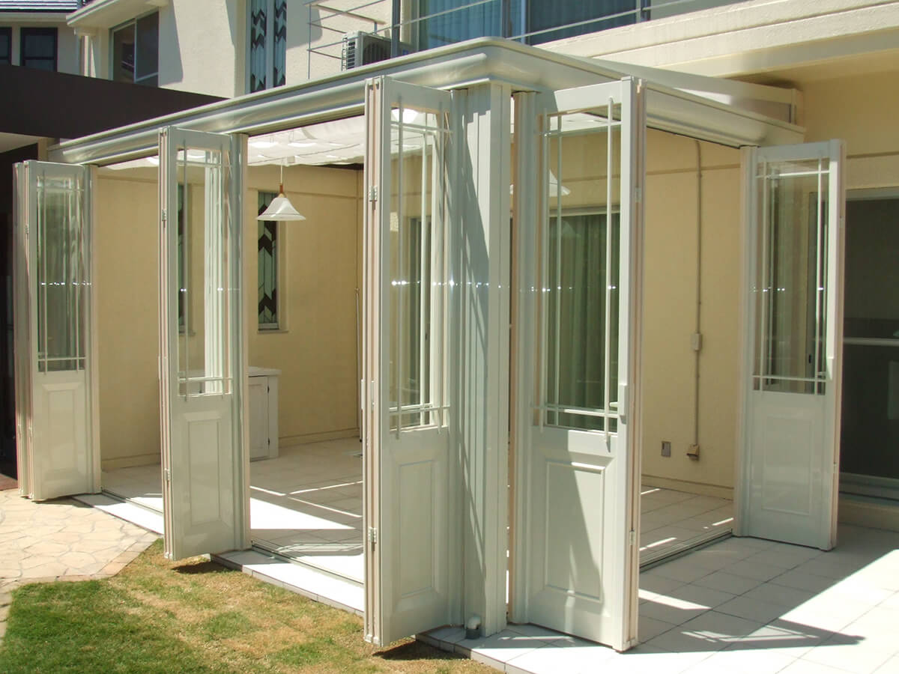 -
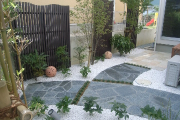
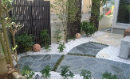
PICK UP
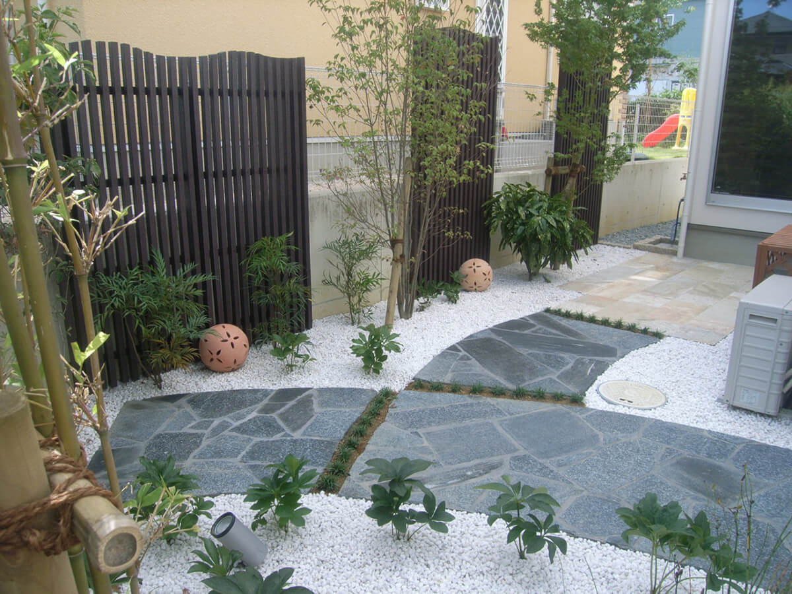 -
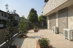
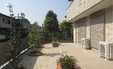
PICK UP
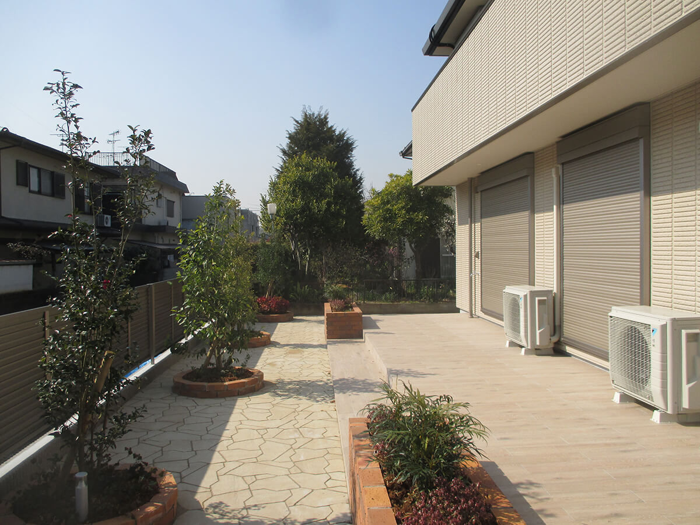
-
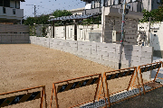
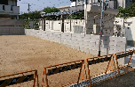
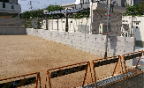
もうすぐ創業50年、
あなたのキャリアプランも
しっかり考えています。
世間では、終身雇用が保証されにくい世の中になってきました。
その中で、「長く勤めることができる会社」「手に
職をつけられる業種」は、
キャリア形成にも影響します。
人が生きている以上、家や建物を建てることは無くなりません。
また、古くなった建物を部分的に改修することは増えていきます。
その時にあなたがエクステリア業界のプロになっていれば、たくさんの生きる道を作ることができます。
株式会社エンテックスでは、会社の成長だけでなく、あなたの成長も応援します。
株式会社エンテックスでは、会社の成長だけでなく、あなたの成長も応援します。
株式会社ENTEXでは、会社の成長だけでなく、あなたの成長も応援します。
人材育成に最大限の力を
注ぎます！
【入社後の研修制度について】
入社後は、専属の先輩社員と共に現場で簡易な作業から仕事を開始してもらいます。
職長と呼ばれる、現場を管理する人に付いて道具、材料の名前や作業内容を把握しながら、勉強してもらいます。最初は一人の職長と同じ現場で作業を行ないますが、慣れてきたら、色々な現場で沢山の職長と触れ合いながら学ぶ事が出来ます。
雨天の日は、屋内で金物や、ブロックの施工練習、図面の勉強も実施します。
入社後のキャリアプラン
- 入社1年目
- たくさんの現場を経験し、いろんな先輩社員と接すること
で、まずは一通りの作業内容と現場作業の流れを把握します。 - 入社3年目
- 1人で現場での作業を徐々に行います。
- 入社5年目
- 職長（現場での管理が出来る人）昇格に向けて必要な研修や
資格を取得してもらいます。職長になると、現場でお客様との
打合せや材料の注文、品質管理、工事写真管理、原価管理と
いった管理業務も担います。 - 入社10年目〜 独立か、管理職か。
- 独立を希望する人は、
建築士や施工管理技術者への資格の取得、独立に向けての勉強までサ
ポートします。独立後はENTEXから仕事を受注することも可能です。
仕入先の紹介なども行ないますので、安心して独立できます。
独立を望まない人は、
管理職となり職人の管理や他社が開催する会議へ参加したり、お客
様との工事打合せの作業内容確認を行います。
あなたは、
どんな未来に向けて
どんなキャリアで
仕事をしたいですか？
-
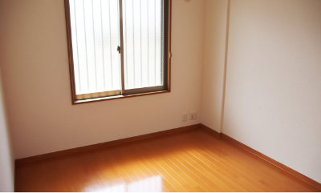 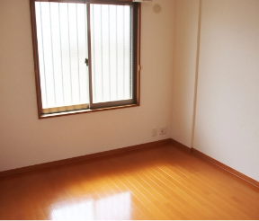
-
充実した福利厚生サービス
-
遠方から弊社に入社される人は、ENTEX本
遠方から弊社に入社される人は、ENTEX本社の上に社宅(社員寮)があります。
遠方から弊社に入社される人は、ENTEX本社
※現在は満室のため、近くのワンルームから（自転車通勤圏内）通勤していただきます。
-
年1回社員旅行を開催(参加希望者のみ)
※社員旅行積立金 3,000円/月（会社が旅費の半分以上を負担）
- 社会保険完備(雇用保険、労災保険、健康保険、厚生年金）
- 希望者参加型の食事会(費用は会社負担)
-
各種手当も充実
- 皆勤手当：5,000円
- 雨天手当：1,000円
- 固定休日手当：5日分（賃金単価による）
- 資格手当
- 残業、休日手当
- 技能手当
- 通勤手当：月3万円まで
- 昇給あり
- 賞与あり(夏・冬 年2回）
独立支援制度も充実!20代でも独立可能
-
独立支援制度
- 資格取得費用の援助
- 座学（法律、行政への対応）の勉強支援
- 仕入先の紹介
- 顧問税理士、行政書士、弁護士の紹介
- 資格取得費用の援助
-
遠方から弊社に入社される人は、ENTEX本
遠方から弊社に入社される人は、ENTEX本社の上に社宅(社員寮)があります。
遠方から弊社に入社される人は、ENTEX本社
先輩社員からのメッセージ
未経験で入社した多くのメンバーが
活躍しています。
各部門で活躍する現役メンバーたちの
「リアルな声」をお届けします。
-
INTERVIEW
いつも明るく元気に作業。朝も一番に出勤してます！
INTERVIEW
いつも明るく元気に作業。朝も一番に出勤してます！

安川 聖 (30)
入社2年目・外構担当職人
- Q. 仕事内容について教えてください
外構工事を担当しています。建物を新しく建てる際やお庭のリフォームを検討されてる方をはじめ、カーポート、ウッドデッキ、ブロック塀、門扉、アプローチ シャッター、フェンス、テラスなど、大小様々な工事を行っています。
- Q. 入社の決め手について教えてください
もともとは営業や飲食業、アパレル関係の仕事をしていましたが、何
- Q. 仕事でやりがいを感じるときはどんな時ですか？
入社2年目ということもあり、作業中などはあまり余裕を感じることはありませんが、現場の着工前と完成後を見るとやりがいを感じます。
また、完成後に自分が携わった現場を通りかかり、そこに住むひとたちが何気ない生活を送っている姿を見るのもやりがいを感じます。私たちの仕事は、世の中に残っていく仕事です。 - Q. 入社を希望される方に向けてメッセージをお願いします
はっきり言って肉体労働では重いものを運びますし、夏は暑く、冬は寒いです。仕事自体は難しいですが、体力が無くても、不器用でも、信念をもって取り組めばこの仕事は務まると思います。そんな信念のあるひとを私たちはお待ちしています。
- Q. 仕事内容について教えてください
-
INTERVIEW
職長として
土木・外構工事の現場管理をしながら作業指示INTERVIEW
職長として土木・外構工事の現場管理をしながら作業指示
福元 和稔 (45)
入社3年目・土木、外構担当職長
- Q. 仕事内容について教えてください
外構工事を担当しています。建物を新しく建てる際やお庭のリフォームを検討されてる方をはじめ、カーポート、ウッドデッキ、ブロック塀、門扉、アプローチ シャッター、フェンス、テラスなど、大小様々な工事を行っています。
- Q. 入社の決め手について教えてください
ENTEXなら、自分の技術を発揮できると思ったからです
- Q. 仕事でやりがいを感じるときはどんな時ですか？
ENTEXなら、自分の技術を発揮できると思ったからです
- Q. 入社を希望される方に向けてメッセージをお願いします
たくさんの仲間と協力し合い、完成させていく楽しい職場だと思います。
- Q. 仕事内容について教えてください
-
INTERVIEW
高校卒業後に入社し、関西で妻と出会い結婚。
外構部長へINTERVIEW
高校卒業後に入社し、関西で妻と出会い結婚。外構部長へ
工藤 智成 (41)
入社23年目・外構部長
- Q. 仕事内容について教えてください
外構工事と造園を担当しています。家の外周り、ブロック工事、フェンス工事、カーポート、ゲート取付工事、門柱、タイル工事、電気取付工事、ガレージコンクリート仕上げ、石張り工事、インターロッキング工事など様々な案件を手掛けています。
- Q. 入社の決め手について教えてください
自分は大分県の田舎で育ったため、地元以外のところで就職したくて求人情報を見ていたら、ENTEX（旧：遠藤ブロック）社の求人票が目に留まりました。
他社と比べて給与等も好待遇だったため、入社を決めました。 入社した以上は一生懸命に仕事を覚えていこうと思いながら仕事をしていたら、あっという間に21年が経っていました。 - Q. 仕事でやりがいを感じるときはどんな時ですか？
「想像していた以上に綺麗に仕上がっています」などお客様から直接お礼を言われた時や、自分の手掛けた物件が、カタログや各メーカーのサイトなどに掲載された時にやりがいを感じます。
- Q. 入社を希望される方に向けてメッセージをお願いします
- 一生懸命やれば、知恵が出る
- いい加減だと言い訳ばかり
- 中途半端だと愚痴が出る
入社を希望される方は、この言葉通りに一生懸命がんばってください。
- Q. 仕事内容について教えてください
代表者メッセージ 代表メッセージ 代表メッセージ
-
「学歴・経験不問。 ポテンシャル重視で採用」 ポテンシャル重視で採用」
弊社は、｢お客様に喜ばれる仕事をしよう｣という会社理
念を掲げて社会貢献事業を行なっています。
何か仕事で
困った事があってもお客様の立場や、気持ちを考えれば
社員一同、同じ方向を向いて仕事が出来ます。
また、個人の目標も大切にしており弊社の全てのメンバ
ーが夢、希望をもって仕事に取り組み楽しい職場作りを
目指しております。
メンバー同士、助け合いの精神をもって規律正しく和気
あいあいと作業を行なっています。
昔のように職人は誰でもなれる職業ではありません。
身
体も頭脳も健全でなければ一流の職人にはなれません
が、ENTEXでは多くのまだ若いプロの職人が親切、丁寧
に教育しますので安心です。
自分の作品として最低でも50年は施工場所が残る仕事です。
大切な家族や友人に、自分が施工した自慢の作品がすぐに理解できて
貰える喜びが、
とても嬉しくて遣り甲斐のある仕事です。
株式会社ENTEX 代表取締役社長 遠藤 剛
株式会社エンテックス 代表取締役社長 遠藤 剛
株式会社エンテックス
社名の由来
-
- EN当社代表「遠藤(Endo)」の頭文字
- TEテクノロジー(技術)
- X無限に成長すると言う意味のX
採用情報
株式会社エンテックスでは、
下記の人材を募集しています。
詳しくは募集要項をご確認ください。
- 新卒採用
- 中途採用
| 職種 | 外構工事・土木工事（未経験者） |
|---|---|
| 仕事内容 | 外構工事、土木工事、各種工事
各種解体業 新築販売(設計・施工・販売)、リフォーム事業、 宅地建物取引業 |
| 雇用形態 | 正社員 |
| 応募資格 | 土木、建設、建築を学んだ方、未経験者も可 普通自動車免許取得者 |
| 給与 | 外構工事・土木工事（未経験者）194,000円～282,000円 |
| 昇給賞与 | 昇給年に１回 |
| 諸手当 |
皆勤手当：5,000円 固定休日手当：5日分（賃金単価による） 資格手当: 内容により上限20,000円 残業手当あり |
| 福利厚生 | 社会保険完備（健康保険、厚生年金保険、労災保険、雇用保険） |
| 勤務地 | 〒662-0928 兵庫県西宮市石在町17-41 |
| 勤務時間 | 8:00 ～ 17:00 変形(１年単位) |
| 休日休暇 | 日・祝 会社カレンダーによる 夏季・年末年始 |
| 採用担当 | 遠藤 |
| 応募者向け メ ッセージ |
阪神間でNo.1を誇る外構･エクステリア業者です。お客様に喜ばれる仕事を 理念に掲げ、即戦力 となる社員育成を行っております。 幅広い仕事をこなす事が出来、年に一度上司によるキャリアアップ等に関する面談、資格取得支援もありスキルアップのチャンスがあります。 |
| 職種 | 外構工事・土木工事 |
|---|---|
| 仕事内容 | 外構工事、土木工事、各種工事 各種解体業 |
| 雇用形態 | 正社員 |
| 応募資格 | 土木、建設、建築を学んだ方・経験者 未経験者も可 普通自動車免許取得者 |
| 給与 |
現場監督、施工管理業務 350,000円 ～500,000円 外構工事・土木工事（経験者）238,000円～460,400円 外構工事・土木工事（未経験者）194,000円～282,000円 昇給賞与：昇給年に１回 |
| 昇給賞与 | 昇給年に１回 |
| 諸手当 |
皆勤手当：5,000円 固定休日手当：5日分（賃金単価による） 資格手当: 内容により上限20,000円 残業手当あり |
| 福利厚生 | 社会保険完備（健康保険、厚生年金保険、労災保険、雇用保険） |
| 勤務地 | 〒662-0928 兵庫県西宮市石在町17-41 |
| 勤務時間 | 8:00 ～ 17:00 変形(１年単位) |
| 休日休暇 | 日・祝 会社カレンダーによる 夏季・年末年始 |
| 採用担当 | 遠藤 |
| 応募者向け メッセージ |
阪神間でNo.1を誇る外構･エクステリア業者です。 お客様に喜ばれる仕事を理念に掲げ、即戦力となる社員育成を行っております。幅広い仕事をこなす事が出来、年に一度上司によるキャリアアップ等に関する面談、資格取得支援もありスキルアップのチャンスがあります。 |
会社情報
| 商号 | 株式会社 ENTEX（エンテックス） |
|---|---|
| 代表取締役社長 | 遠藤 剛 |
| 所在地 | 〒662-0928 兵庫県西宮市石在町17-41 |
| 電話番号 | 0798-23-6600 |
| FAX | 0798-23-6611 |
| office@entex.co.jp | |
| 資本金 | 1000万円 |
| 営業種目 |
|
| 取引先銀行 | 三井住友銀行 西宮北口支店／みなと銀行 西宮支店 尼崎信用金庫 阪神西宮支店／日新信用金庫 西宮今津支店 |
| 職員 | 7名（社長、営業本部長、営業2名、インテリアコーディネーター、事務員、経理） |
| 施工管理者 | 20名 |
| 所在地 | 建設業許可 兵庫県知事（般-24）第212783号 |
| 産業廃棄物収集運搬 | 第02700132723号、第02803132723号 |
| 宅地建物取引業 | 兵庫県知事（1）第204254号 |
| 2級建築士事務所 | 兵庫県知事登録第02 04382号 |
| 有資格者 | 1級施工管理技士（1名）／ ブロック建築1級（2名）／ 2級建築士（2名）／ 2級土木施工管理技士（2名）／ 2級管工事施工管理技士（1名）／ 宅地建物取引士（2名）／ 下水道排水設備工事責任技術者（1名） |
| 車両 | トラック7台／軽乗用車3台／乗用車5台／ハイエース1台 |
| 施工管理者 | 20名 |
| 厚生施設 | 社員寮あり |
| 産業廃棄物収集運搬 | 第02700132723号、第02803132723号 |
| アクセス | 西宮市役所から南へ徒歩10分 |
| 2級建築士事務所 | 兵庫県知事登録第02 04382号 |
| 資本金 | 1000万円 |